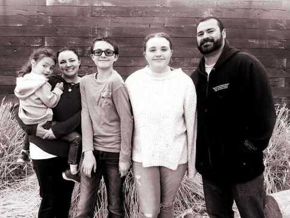

My journey into the tech industry is unique! I became a mom at a very young age and never really had the chance to fully explore a way to combine my passions and a career. As my kids have gotten older my family has been very supportive of giving me that chance. I have always had an interest in technology and believe the possibilies are endless with what we can do with it. I hoped I could help shape that future! Destiny called when I learned about MotherCoders! I was picked along with 14 other women in Utah to participate in Lehi, UT. It was a great way to learn some coding, networking, about the different careers available, and even build my own website. We have now finished our program and I can't wait to share my passions and a diverse point of view to the industry!

I live with my husband and 3 kids in SLC, UT. You can catch me with my laptop, camera, or a book. I love writing, crafting, and going on adventures with my family!